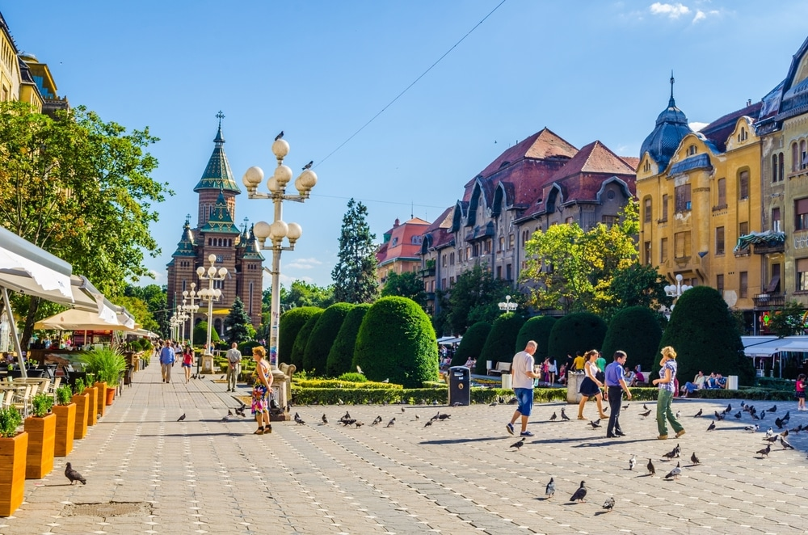

This sweeping rectangular plaza plotted in the 18th century is fronted by sumptuous Baroque and Viennese Secessionist facades in a spectrum of pastel shades.Facing off on the east and west borders are the Catholic and Serbian Orthodox Cathedrals, both from the 18th century and the latter capped with a patterned roof.Take time to enjoy the architecture at monuments like the Baroque Palace, the Roman Catholic Canonic Houses and the Orthodox Episcopal Palace.In the centre is a lawn fringed by a balustrade and centred on a delightful fountain and the Holy Trinity plague column, erected to mark the end of a plague epidemic that hit Timișoara in the 1730s.

2. Piaţa Victoriei (Victory Square)
Another sublime public space Piaţa Victoriei is a long, pedestrianised square where many of Timișoara’s cultural amenities are set.The square is injected with a sense of spectacle by two epic monuments, the 90-metre Orthodox Metropolitan Cathedral on the southern end and the Romanian Opera House in the north.One of the more compelling monuments is a replica of the Capitoline Wolf suckling Romulus and Remus, raised atop a five-metre pillar and donated by the city of Rome in 1926. Along with the Opera House, some of the cultural venues here include the German State Theatre, the Banat Museum a range of art galleries and Cinema Timiș.
3. Historic Centre
As Timișoara was crammed within a citadel, the old centre of the city is very walkable and has a circular plan, traced by lush parks and the Bega River to the south.You’ll get to know why the city was sometimes called “Little Vienna” when you see the quantity of Secessionist buildings, and while they’re in different states of repair even those with a patina of age are still photogenic.And the Bega’s right bank is hemmed for a few kilometres by a line of parks.Their Historicist and Secessionist villas and tenement houses are in the southwest of the city on the roads turning off the riverside Splaiul Tudor Vladimirescu
4. Orthodox Metropolitan Cathedral
A serious technical achievement , the neo-Byzantine Orthodox Metropolitan Cathedral is in its own park on the south side of Piaţa Victoriei.Able to fit 5,000 worshippers at once under its nine towers, the monument was begun in 1936 and completed in 1941 and is the tallest Orthodox building in the world outside of Russia and Georgia.The design was borrowed from the Medieval Byzantine churches of Moldavia in the east of Romania, but by using reinforced concrete the designers were able to create a cavernous, open interior undisturbed by columns.In the crypt is a big collection of historic religious art from around Banat, as well as books, manuscripts, metalwork and the relics of St Joseph the New of Partos, a 16th-century bishop and now the patron saint.
5. Roses Park
If you’re wondering why Timișoara has the nickname, “The City of Flowers”, it has a lot to do with parks like this one in the line of gardens beside the Bega River.Roses Park was designed for the Universal Exposition in 1891, when Emperor Franz Joseph I was a visitor.And after being dug up and used by cavalry in the First World War it was replanted and reopened as the largest rosarium in this part of Europe in 1934. Roses Park is naturally an attraction that shines in spring and summer when hundreds of varieties of roses are in bloom, wrapping around pergolas and kept as individual bushes bordered by trimmed hedges.The park also has a stage for summer movie screenings, concerts and the Festival of Opera and Operetta in August.